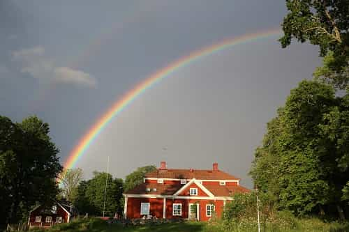

< < < Back
When Everyone Has To Accept Gay Marriage, It’s Not Tolerance But Tyranny – Return Of Kings
A Swedish business owner will have to pay thousands in damages to a lesbian couple who wanted to have their wedding at her rural venue. The religious owner of the establishment didn’t want a gay wedding on her property, which counts as discrimination and a crime.
This is just one of many examples of how legalising same-sex marriage is not about love or equal rights, it’s about about making people accept something their conscience and beliefs find unacceptable. It’s about criminalizing conservatism and infringing on people’s freedom of religion.
Lesbians pressed charges after being turned down
Trollebo Gård on its web page describes itself as a “paradise.” Situated in Småland, Sweden, the farm dates back to the 14th century. According to its own description, a knight by the name of Lionface gave it to his wife as a wedding gift in 1361. Now it’s for sale, with a starting price of 15 million SEK (about 1.8 million USD).
In November 2014, the farm wasn’t on the market yet. For what I assume was a high price, you could arrange parties, conferences and other festive events there. A lesbian couple decided they wanted to have their wedding at the scenic location. They called up the owner who said that it wasn’t possible, there were no times available for a wedding. But only four days later, a heterosexual couple had no problem making a reservation for their wedding at the same place.
Somehow the lesbian couple found out about this and charged Trollebo Gård for discrimination. Now the case has been settled and the owner has admitted to the charges. The owner, a woman, did in fact not want homosexuals to be married at her venue, so she turned the couple’s request down. She claimed that the reason for this was her religious beliefs.
The Equality Ombudsman says that religiosity is not a valid reason to turn down a customer. Therefore, Trollebo Gård now has to pay 15.000 SEK to each of the women, 30.000 total ($3,664 USD), in damages.

An ominous rainbow over Trollebo Gård.
Freedom of religion ended with gay marriage
I haven’t seen this case get a lot of attention in the media. Maybe it’s because people don’t see it as a big deal. Maybe they think it’s right that the owner got this punishment for discriminating against gays. Or maybe they think it’s too embarrassing that this has happened in a country that purports to have freedom of religion. Obviously the right of this woman to live by her moral principles, rooted in her religious beliefs, has not been respected.
What’s interesting is that the law doesn’t seem to treat all people the same in this matter. The Swedish parliament decided to make marriage laws gender neutral in 2009, and so same-sex marriage became legal. The same year, the Lutheran Church of Sweden changed their own statutes to make it possible for gay couples to get married in church. However, the new rules also meant that no individual priest was obligated to conduct same-sex weddings.
What this means is that a priest can legally refuse to marry gay couples with reference to his own conscience and deeply held beliefs. Yet when a business owner for the same reasons don’t want to have gay weddings on her private property, it’s deemed discrimination and a violation of the law. To me, this doesn’t make any sense at all. It does seem like the church and its clerics have privileges that normal citizens don’t have.

Sorry that you didn’t get a trigger warning for this, but neither did I.
Traditional values have become illegal
I’ve never really given gay marriage that much thought. I’m not a religious person, so I don’t see it as an issue in that sense. But when you get the government involved in things, it’s never as simple as a private matter. Now we’re all involved, because the government’s dictates can’t be ignored. If the politicians want you to approve of same-sex marriage, you have no other choice than to abide. (Or they’ll put a gun to your face.)
But wait a minute. Maybe I’m the bad guy in all of this. Gay people should have the same rights as straight people, shouldn’t they? So if straight people can get married, gay people should be able to do that too. Wouldn’t you be a really bigoted homophobe if you thought that marriage could only be between a man and a woman? And shouldn’t that kind of thinking be a crime, since it can make gays feel badly treated?
My answer to that last question is: nope. I don’t think any opinions or values should be criminal. Freedom of religion means you can practice your religion in whatever way you like, as long as it doesn’t hurt anyone else. Getting some angry dyke’s feelings hurt doesn’t count.
Gay marriage isn’t really the problem here, it’s the laws that force everyone to accept it. They make you think it’s about tolerance, “being nice,” yet the very idea behind these laws is that traditional, conservative values can’t be allowed to exist and must be suppressed. The political scene is infested with Marxists who are by far the most intolerant people on this planet. Yet they are also great deceivers and can make you think that their intolerance is really about being nice and inclusive, 2 plus 2 equals 5.
Tyranny is being sold as tolerance, and it’s unfortunate that so many are buying into it.
 If you like this article and are concerned about the future of the Western world, check out Roosh's book Free Speech Isn't Free. It gives an inside look to how the globalist establishment is attempting to marginalize masculine men with a leftist agenda that promotes censorship, feminism, and sterility. It also shares key knowledge and tools that you can use to defend yourself against social justice attacks. Click here to learn more about the book. Your support will help maintain our operation.
If you like this article and are concerned about the future of the Western world, check out Roosh's book Free Speech Isn't Free. It gives an inside look to how the globalist establishment is attempting to marginalize masculine men with a leftist agenda that promotes censorship, feminism, and sterility. It also shares key knowledge and tools that you can use to defend yourself against social justice attacks. Click here to learn more about the book. Your support will help maintain our operation.
Read More: Why Homosexual Marriage Matters For Straight Men